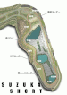
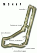
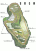
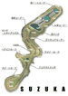
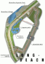
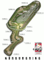
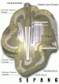
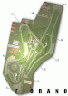

|
|
|
|
|
コース概要
本ソフトに登場するコースは、実在のコースを元に綿密に作られました。ここでは、そのコースを紹介します。
| MOTEGI（モテギ） |
全長：2414m 最大バンク角：10度
この非常にシンプルなレイアウトは、超高速での勝負をもたらします。見た目以上に奥が深く、特に第3コーナーで十分減速しないと壁に当たってしまうので注意が必要です。 |
 |
| SUZUKA SHORT（スズカ-ショート） |
全長：2243m
SUZUKAのショートバージョンだとあなどってはいけません。特に逆バンクから最終コーナー入り口への難易度はかなり高く、この最終コーナーの攻め方によってタイムが大きくかわるので注意が必要です。もちろんSUZUKA（LONG）の練習にも最適です。 |
 |
| MONZA （モンツァ） |
全長：5770m
他のコースにくらべてとにかく6速全開のエリアが多いのがこのコースの特徴です。S字と2つのシケイン以外はストレートか緩やかなカーブですが、高速域からのアプローチが多いため少しのミスが大きなタイムロスへと繋がります。 |
 |
| SUGO（スゴウ） |
全長：3704m 最大高低差：70m
最大標高差が70mですが、勾配を頭に入れて走れば組み立ては比較的容易です。最も重要なのは最終コーナーで、 一発で飛び込んでいければ、ストレート・スピードを確実に乗せていくことができます。 |
 |
| SUZUKA（スズカ） |
全長：5864m
1周が長く、抜きどころが少ないのがこのコースの特徴です。基本レイアウトは8の字で、様々なタイプのコーナーが含まれた非常にテクニカルなコースです。最重要ポイントの130Rでは、怖がらずに失速を最低限に押さえるよう心掛けましょう。 |
 |
| LONG-BEACH（ロング-ビーチ） |
全長：2558m
ストレートや高速、直角コーナー、タイトなヘアピンなどが巧みに組み合わされているのが特徴です。長いバックストレートの後にある直角コーナーのブレーキング・ポイントを押さえることが重要です。 |
 |
F355
Challenge
以下のコースは隠しコースになります。【出現条件】(1)、(2)のいずれかを満たすか、“MAIN MENU”→“OPTIONS”内で、コントローラのXとYを同時に押すと現れる“PASSWORD”という項目に下記のコマンドを入力して下さい。
●ATLANTA→DaysofThunder
●NURBURGRING→LiebeFrauMilch
●LAGNA SECA→Stars&Stripes;
●SEPANG→KualaLumpur
●FIORANO→CinqueValvole |
|
| ATLANTA（アトランタ） |
全長：2478m
アメリカ南部の1.5マイルオーバル。最大24度のバンクをうまく利用して、スピードを殺さないように走行することが大切です。オーバースピードでターンに入ってしまうと、アンダーが出て、すぐにコンクリートウォールのえじきになります。
【出現条件】
| (1) |
MOTEGI/SUZUKA SHORT：ARCADEモード3位以内 |
| (2) |
走行距離：500km以上 |
|
 |
| NURBURGRING（ニュルブルクリンク） |
全長：4556m
ドイツが誇るテクニカルサーキット。有名なドイツのサーキットです。グランプリコースを採用しています。このコースはスタート直後のS字とヘアピンが要注意です。ビードル
シケイン部分は簡単なS字セクション側の走行です。
【出現条件】
| (1) |
MONZA/SUGO：ARCADEモード3位以内 |
| (2) |
走行距離：600km以上 |
|
 |
| LAGUNA-SECA（ラグナ・セカ） |
全長：3602m
「コークスクリュー」と呼ばれる急勾配コーナーが有名なアメリカのサーキット。この高低差はジェットコースターを思わせます。上り下りさえ考慮した走りをすれば、比較的やさしくマスターできます。最大のヤマはやはりコークスクリューです。
【出現条件】
| (1) |
SUZUKA/LONG BEACH：ARCADEモード3位以内 |
| (2) |
走行距離：700km以上 |
|
 |
| SEPANG（セパン） |
全長：5542m
マレーシアの国際サーキット。とても新しいサーキットで、道幅の広いのが特徴です。しかし、複合コーナーが多く、非常にトリッキーな難コースです。2本のストレートの立ち上がりを早くすることがタイムアップにつながります。
【出現条件】
| (1) |
CHAMPIONSHIPモード40PTS.以上 |
| (2) |
走行距離：800km以上 |
|
 |
| FIORANO（フィオラノ） |
全長：2976m
フェラーリ・テストコース。世界各地のサーキットの特徴あるコーナーをふんだんに盛り込んで設計されたテクニカル・サーキットです。テストコースのため、1人プレイではレースを選択することができません。
【出現条件】
| (1) |
CHAMPIONSHIPモード80PTS.以上 |
| (2) |
走行距離：1000km以上 |
|
 |
| ※ |
コースレイアウト・各種データは、本ソフト製作時のものです。そのため、現在は改修されたコースもあります。 |
|
|
 |
|
 |
|